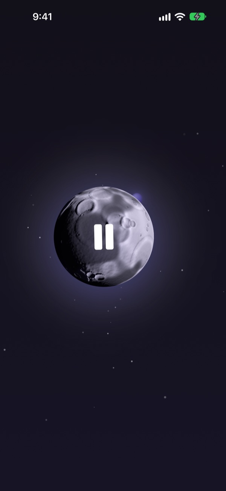
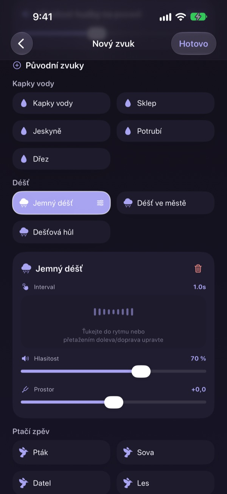
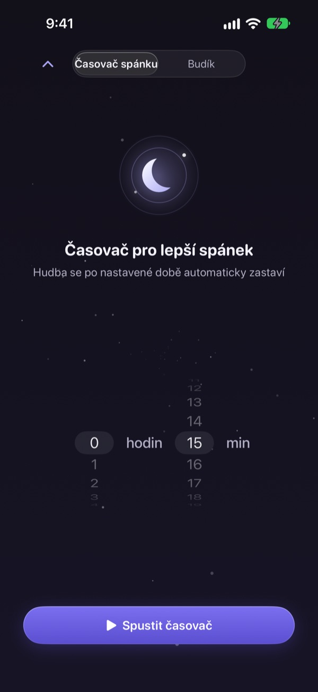
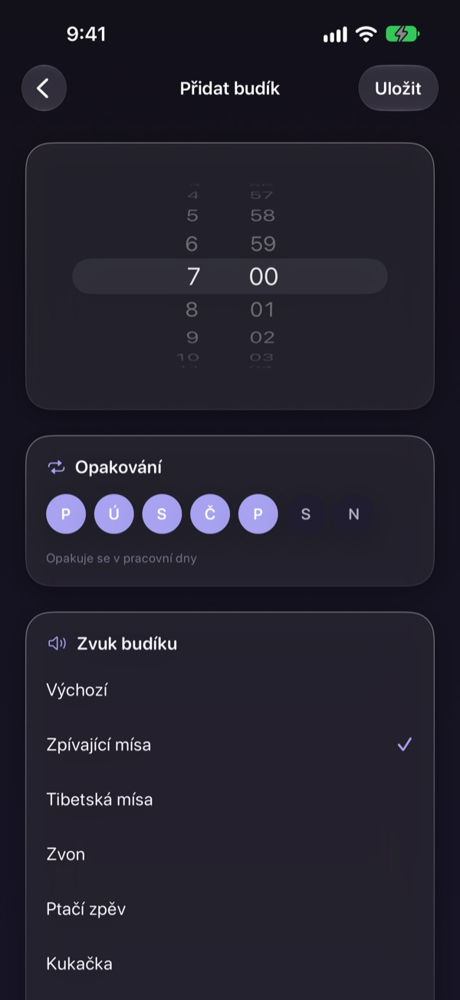
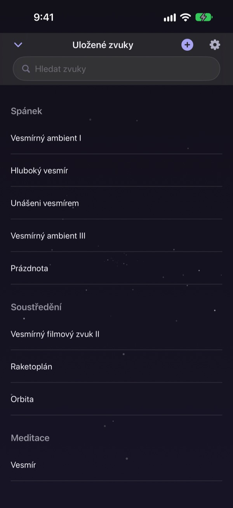

Nehledejte celou noc
ten správný zvuk
Jednou si vrstvením deště, kapek vody a tibetské mísy vytvořte vlastní zvuk. Od další noci stačí ťuknout na měsíc.
Všechny zvuky můžete poslouchat zdarma. Pro iPhone a iPad.

Strávili jste někdy hodinu hledáním něčeho na usnutí?
Déšť je moc jednotvárný, vlny moc hlasité a video uprostřed noci přeruší reklama. V Dalbitu si oblíbené zvuky vrstvíte sami, dokud nesedí přesně vám, a celé to schováte za jediný měsíc.
Postavte si zvuk z vrstev
Skládejte na sebe déšť, kapky vody, zpěv ptáků a tibetské mísy. U každé vrstvy nastavíte hlasitost, jak často zazní a odkud ji slyšíte, a pod to můžete dát vlny nebo klavír jako hudbu na pozadí.
Mix pojmenujte, uložte a vracejte se k němu každou noc.

Utichne, aniž by vás probudil
Časovač spánku zvuk nikdy neusekne. Pomalu ho ztiší, aby vás konec znovu nevzbudil.
Zvuk hraje dál i se zhasnutou obrazovkou nebo v jiné aplikaci, a když na nic nesaháte, obrazovka sama ztmavne.

Ráno vás vzbudí jemně
Nastavte budíky se zvukem zpívající mísy, tibetské mísy, ptáků nebo kukačky a opakujte je ve vybrané dny.

Jeden měsíc na všechno
Ťuknutím na měsíc spustíte přehrávání, dalším ho pozastavíte. Přejetím do strany změníte zvuk, nahoru otevřete časovač spánku, dolů uložené zvuky.
Když se vám zvuk líbí, podržte na měsíci prst a přidejte ho do oblíbených.

Začnete ve třech krocích
- 1
Ťukněte na měsíc
Otevřete aplikaci, ťukněte na měsíc a zvuk hned začne.
- 2
Přejeďte do strany
Listujte, dokud nenarazíte na zvuk, který sedí.
- 3
Nastavte časovač a lehněte si
Přejeďte nahoru, zvolte čas a potom zvuk pomalu dozní.
Co umí měsíc
- Ťuknutí
- přehrát, pozastavit
- Přejetí do strany
- další zvuk
- Přejetí nahoru
- časovač spánku a budíky
- Přejetí dolů
- uložené zvuky
- Podržení
- přidat do oblíbených
Pozastavit a pokračovat můžete i z ovládání přehrávání na zamčené obrazovce.
Poslech je zdarma. Premium je na tvoření víc.
Zdarma
- Všechny zvuky
- Vrstvení zvuků do vlastního mixu
- Až tři uložené mixy
- Časovač spánku s postupným ztišením
- Budíky s jemnými zvuky
- Oblíbené
Dalbit Premium
- Tvořte a ukládejte libovolný počet mixů
Měsíční automaticky obnovované předplatné se zkušební dobou zdarma
Předplatné se automaticky obnoví, pokud ho nezrušíte alespoň 24 hodin před koncem aktuálního období. Po skončení zkušební doby se účtuje. Platí standardní podmínky užívání Apple (EULA).
Časté dotazy
Jak spustím a změním zvuk?
Ťukněte na měsíc na hlavní obrazovce a zvuk začne hrát, dalším ťuknutím ho zastavíte. Přejetím do strany změníte zvuk, nahoru otevřete časovač spánku a dolů svou knihovnu.
Přestane zvuk hrát, když zhasne obrazovka?
Ne. Hraje dál i se zhasnutou obrazovkou nebo v jiné aplikaci. Zastavíte ho dalším ťuknutím na měsíc nebo ovládáním na zamčené obrazovce.
Co se stane, když časovač doběhne?
Zvuk se neusekne, ale postupně slábne a pak se zastaví, aby vás nevzbudil.
Budík nezvoní.
Při vytváření prvního budíku aplikace požádá o povolení. Zkontrolujte, že je zapnuté v Nastavení > Dalbit.
Kde jsou uložené moje mixy?
Mixy, budíky i nastavení zůstávají jen v tomto zařízení. Když aplikaci smažete, smažou se s ní.
Co můžu používat zdarma?
Všechny zvuky, vrstvení a až tři vlastní mixy. Časovač spánku a budíky jsou také zdarma. Premium ruší limit počtu mixů.
Jak zruším předplatné?
Otevřete Nastavení > Účet Apple > Předplatné, vyberte Dalbit a zrušte ho. Pokud ho nezrušíte alespoň 24 hodin před koncem aktuálního období, automaticky se obnoví.
Po výměně telefonu mi zmizelo předplatné.
Přihlaste se stejným účtem Apple, otevřete v Dalbitu obrazovku předplatného a klepněte na Obnovit nákupy.
Jak nahlásím chybu nebo navrhnu funkci?
Pošlete zpětnou vazbu z nastavení aplikace nebo nám napište na adresu níže. Obvykle odpovídáme do několika dnů.
Dotazy nebo nápady posílejte na mizzking75@gmail.com.